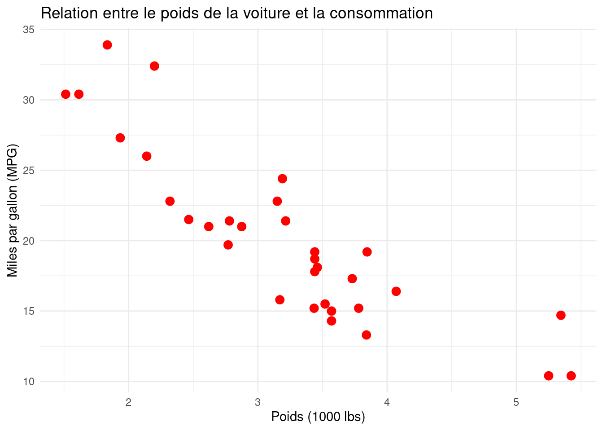
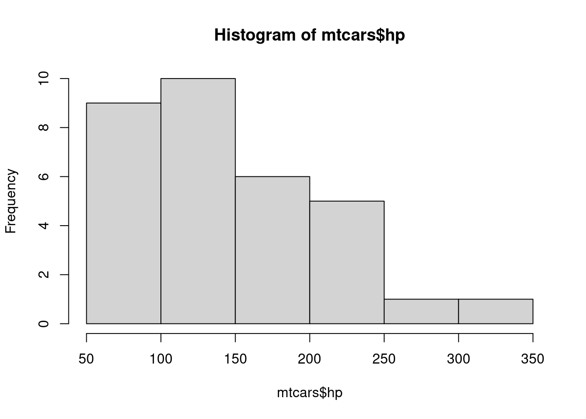
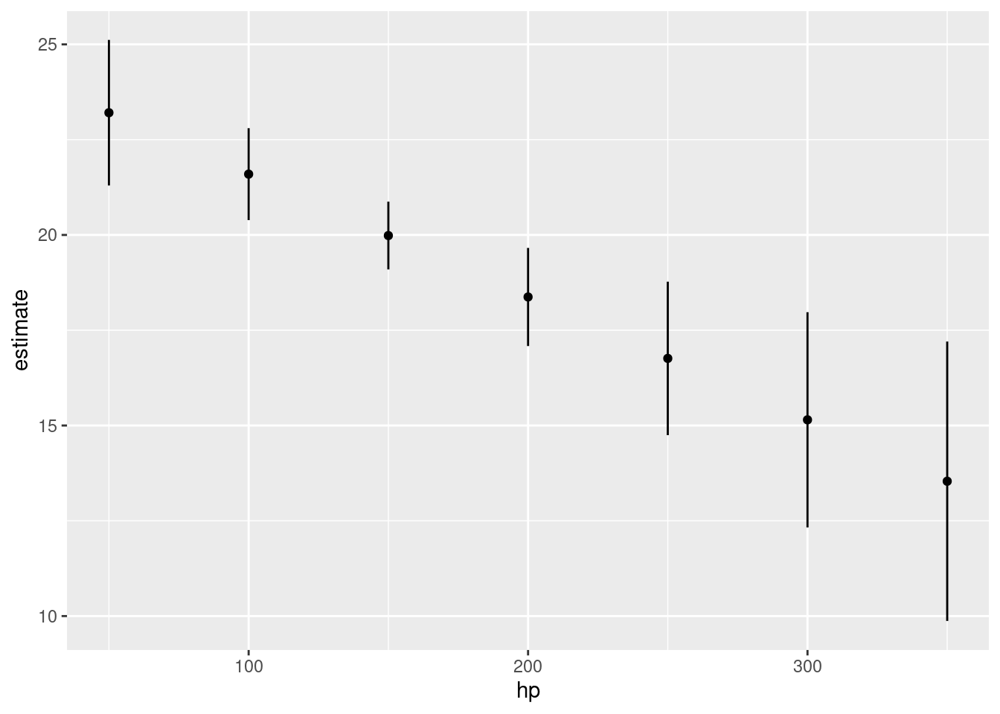

| Critères | R | Python | Tableau | Excel |
|---|---|---|---|---|
| Accessibilité (Gratuit ou peu dispendieux) | Oui (Gratuit) | Oui (Gratuit) | Non (Payant) | Non (Payant) |
| Existence d'une communauté d'utilisateurs | Oui (Forte communauté active) | Oui (Grande communauté active) | Oui (Communauté grandissante) | Oui (Large communauté d'utilisateurs) |
| Popularité dans le champ | Populaire dans l'analyse de données | Populaire dans l'analyse de données et la science des données | Populaire dans la visualisation des données | Très populaire pour des analyses de données simples |
| Compatibilité avec d'autres outils | Bonne compatibilité (nombreux packages pour intégration) | Très compatible (bibliothèques telles que pandas, matplotlib, etc.) | Bonne compatibilité (intégration avec diverses bases de données et fichiers) | Bonne compatibilité (partage facile avec d'autres logiciels Microsoft) |
| Transparence et réplicabilité | Oui (Open-source, réplicable) | Oui (Open-source et réplicable) | Partiellement (Propriétaire, mais partage possible) | Non (Propriétaire, moins réplicable) |
| Adaptabilité et flexibilité | Flexible (hautement personnalisable avec divers packages) | Flexible (nombreuses bibliothèques disponibles) | Flexible (fonctionnalités avancées mais moins personnalisable que R/Python) | Peu flexible (principalement pour des visualisations simples) |
6.3 Manuel d’instruction: La visualisation graphique avec R
Lorsque vous souhaitez créer des graphiques en R, les options abondent. De multiples packages ont été développés dans le but de visualiser des données. Heureusement, les choix diminuent lorsque l’on regarde ce qui est le plus utilisé dans la communauté. L’objectif n’est pas simplement de présenter les packages les plus courrants parce qu’ils sont les plus communs. Les packages les plus utilisés représentent des outils qui ont été grandement vérifiés et améliorés par la communauté en ligne, dont la documentation est abondante et pour lesquels les ressources d’aide en ligne sont innombrables.
6.3.1 Pour les analyses descriptives
6.3.1.1 Base R
Le Base R est le langage de base de R et il permet de faire de nombreuses manipulations statistiques sans avoir à installer de packages au préalable. Le Base R permet notamment de produire des graphiques rapidement. Cela peut être utile pour visualiser la distribution d’une variable ou pour regarder la relation entre deux d’entre elles, par exemple. Pour produire un graphique avec le langage de base R, il suffit de faire appel à la fonction plot(). Avec la fonction plot(), le codeur peut visualiser la distribution d’une variable seule en spécifiant l’axe des x dans cette dernière. Le codeur peut également visualiser la relation entre deux variables en spécifiant à l’intérieur de la fonction celles qui composeront les axes des x et des y du graphique. Les fonctions barplot(), hist() ou boxplot() disponibles dans le Base R permettent de spécifier le style de graphique souhaité, qu’on veuille représenter nos données sous forme de diagramme à barre, d’histogramme ou de diagramme en boîtes (Kabacoff, 2022, p. 119‑132).
Alors qu’un peu tout peut être fait avec le Base R, ce langage demeure élémentaire; il est difficile d’innover dans la visualisation ou même de produire des graphiques plus sophistiqués. Le Base R peut sembler plus simple pour l’exploration de données ou pour produire des graphiques de base rapidement, mais ce langage devient rapidement complexe lorsqu’on cherche à améliorer l’esthétique de son graphique ou à visualiser des relations entre plusieurs variables, ce que lattice et ggplot2 permettent plus facilement(Wickham, 2009, p. 3‑4).
6.3.1.2 lattice
Développé par Deepayan Sarkar, lattice cherche à faciliter la visualisation de graphique en facettes. Plus précisément, ce package vise à améliorer les graphiques du Base R en fournissant de meilleures options de graphisme par défaut pour visualiser des relations multivariées. Ce package est donc intéressant pour les chercheurs et les codeurs voulant présenter graphiquement la relation entre plus de deux variables (Kabacoff, 2022, p. 373‑377; Sarkar, 2008, 2023). Pour produire un graphique de base avec Lattice, le package lattice doit préalablement être installé dans la bibliothèque de packages du codeur et chargé dans sa session au début de son code (voir annexe). Par la suite, le codeur doit spécifier le type de graphique souhaité avec la fonction appropriée3. Une fois la fonction choisie, il doit spécifier par une formule les variables x et y ainsi que la troisième variable à contrôler et à visualiser en facettes (graph_type(formula | variable en facettes, data=)).
Cependant, le package lattice a pour désavantage d’avoir un modèle formel (une grammaire de graphique) moins compréhensible et intuitif que celui de ggplot2 lorsque vient le temps d’améliorer l’esthétisme des graphiques. De plus, sa plus faible popularité fait en sorte que ce package demeure moins développé par la communauté de codeurs de R que ne l’est ggplot2. Nous examinons plus en détail la grammaire de graphique de ce dernier package ainsi que ses avantages et inconvénients dans la prochaine section (Kabacoff, 2022, p. 373‑377 et 390; Wickham, 2009, p. 6).
6.3.1.3 Le package ggplot2
Développé principalement par Hadley Wickham, ggplot2 est un package R faisant partie de la collection de packages de tidyverse. Ainsi, ggplot2 peut être utilisé avec les autres packages centraux de tidyverse ce qui limite de potentiels conflits entre les fonctions de packages qui puissent être incompatibles avec ggplot2. Par exemple, le package dplyr de tidyverse est très utile pour analyser, organiser et préparer vos données à visualiser avec ggplot2 (Wickham et al., 2019; Wickham et al., 2023, p. 30).
Le principal avantage de ggplot2 reste sa grammaire qui permet à l’utilisateur de rendre ses graphiques beaucoup plus visuellement attrayants en facilitant la personnalisation esthétique. Ceci permet de pousser l’esthétisme de vos graphiques à un très haut niveau par rapport aux autres packages de visualisation graphique disponibles en R. Les graphiques ggplot2 se construisent couche par couche, soit par l’ajout des différents éléments du graphique au fur et à mesure dans le code du graphique à construire. Dans ggplot2, la fonction aes() définit les mappings esthétiques, liant les variables des données aux éléments visuels du graphique (comme les axes ou la couleur). Les “geoms”, tels que geom_point(), déterminent le type de graphique (points, lignes, barres). La fonction labs() sert à ajouter des étiquettes et des titres aux axes ou au graphique. Enfin, theme() ajuste l’apparence globale du graphique, en modifiant des éléments comme le fond, les grilles, ou le style de texte. Ces composants travaillent ensemble pour construire un graphique clair et personnalisable.
library(ggplot2) # importer le package
# Nous utilisons dans cet exemple le jeu de données intégré mtcars
# Créer un graphique de dispersion (scatter plot) avec ggplot2
ggplot(mtcars, aes(x = wt, y = mpg)) + # Définir les mappings esthétiques: poids (wt) sur l'axe x, consommation (mpg) sur l'axe y
geom_point(color = "red", size = 3) + # Ajouter des points rouges de taille 3
labs(
title = "Relation entre le poids de la voiture et la consommation", # Titre du graphique
x = "Poids (1000 lbs)", # Étiquette de l'axe x
y = "Miles par gallon (MPG)" # Étiquette de l'axe y
) +
theme_minimal() # Appliquer un thème minimaliste pour un aspect propre et simple
6.3.2 Pour visualiser les régressions
Lorsque l’on souhaite aller au-delà des analyses descriptives, il devient pertinent de recourir aux modèles de régression. Si la fonction summary(model) offre une manière simple et rapide d’obtenir un aperçu d’un modèle, ses limites se manifestent lorsqu’il s’agit de visualiser et de comparer plusieurs modèles ou encore de les présenter de manière claire à une équipe ou dans le cadre d’une publication scientifique. La section suivante du chapitre introduira divers outils qui facilitent la visualisation, la comparaison et la présentation efficace de nos modèles de régression.
Le manuel d’instructions de cette section restera volontairement bref et concis en raison de l’abondante documentation déjà existante sur ces outils. L’objectif ici est de les centraliser en un seul endroit.
6.3.2.1 Le package stargazer
Le package stargazer est un package qui permet de générer des tableaux de régression de manière simple et efficace. Selon son auteur, Marek Hlavac, ce package excelle dans trois aspects : sa facilité d’utilisation, la diversité des modèles supportés et son esthétisme (Hlavac, 2022). Bien que nous soyons partiellement d’accord avec ces propos et que stargazer réponde effectivement à ces trois aspects, nous estimons que le package modelsummary (Section 6.3.2.2) surpasse stargazer dans chacun de ces domaines.
Voici une façon standard d’utiliser stargazer pour créer un tableau de deux modèles de régression:
# Il faut premièrement installer et importer le package stargazer si ce n'est pas déjà fait.
# install.packages("stargazer") # installer
library(stargazer) # importer le package
Please cite as: Hlavac, Marek (2022). stargazer: Well-Formatted Regression and Summary Statistics Tables. R package version 5.2.3. https://CRAN.R-project.org/package=stargazer ## Créer deux modèles de régression
mod_lm <- lm(mpg ~ hp + wt, data = mtcars)
mod_glm <- glm(vs ~ hp + wt + drat, data = mtcars, family = binomial())
stargazer(mod_lm, mod_glm, type = "text", title = "Tableau de régression des modèles")
Tableau de régression des modèles
===================================================
Dependent variable:
-------------------------------
mpg vs
OLS logistic
(1) (2)
---------------------------------------------------
hp -0.032*** -0.104**
(0.009) (0.050)
wt -3.878*** 0.860
(0.633) (1.299)
drat -1.625
(2.073)
Constant 37.227*** 16.030
(1.599) (11.974)
---------------------------------------------------
Observations 32 32
R2 0.827
Adjusted R2 0.815
Log Likelihood -7.698
Akaike Inf. Crit. 23.395
Residual Std. Error 2.593 (df = 29)
F Statistic 69.211*** (df = 2; 29)
===================================================
Note: *p<0.1; **p<0.05; ***p<0.01Alors que cette sortie texte est intéressante afin de rapidement visualiser différents modèles de régression, stargazer offre également l’option de transformer ces modèles en latex avec l’argument type:
stargazer(mod_lm, mod_glm, type = "latex", title = "Tableau de régression des modèles")
% Table created by stargazer v.5.2.3 by Marek Hlavac, Social Policy Institute. E-mail: marek.hlavac at gmail.com
<<<<<<< HEAD
% Date and time: Mon, Oct 07, 2024 - 06:34:42 PM
=======
% Date and time: Mon, Oct 07, 2024 - 05:23:01 PM
>>>>>>> 9c01c34b076c260316c22d884f9693566229d815
\begin{table}[!htbp] \centering
\caption{Tableau de régression des modèles}
\label{}
\begin{tabular}{@{\extracolsep{5pt}}lcc}
\\[-1.8ex]\hline
\hline \\[-1.8ex]
& \multicolumn{2}{c}{\textit{Dependent variable:}} \\
\cline{2-3}
\\[-1.8ex] & mpg & vs \\
\\[-1.8ex] & \textit{OLS} & \textit{logistic} \\
\\[-1.8ex] & (1) & (2)\\
\hline \\[-1.8ex]
hp & $-$0.032$^{***}$ & $-$0.104$^{**}$ \\
& (0.009) & (0.050) \\
& & \\
wt & $-$3.878$^{***}$ & 0.860 \\
& (0.633) & (1.299) \\
& & \\
drat & & $-$1.625 \\
& & (2.073) \\
& & \\
Constant & 37.227$^{***}$ & 16.030 \\
& (1.599) & (11.974) \\
& & \\
\hline \\[-1.8ex]
Observations & 32 & 32 \\
R$^{2}$ & 0.827 & \\
Adjusted R$^{2}$ & 0.815 & \\
Log Likelihood & & $-$7.698 \\
Akaike Inf. Crit. & & 23.395 \\
Residual Std. Error & 2.593 (df = 29) & \\
F Statistic & 69.211$^{***}$ (df = 2; 29) & \\
\hline
\hline \\[-1.8ex]
\textit{Note:} & \multicolumn{2}{r}{$^{*}$p$<$0.1; $^{**}$p$<$0.05; $^{***}$p$<$0.01} \\
\end{tabular}
\end{table} Alors que cette sortie est moins compréhensible qu’avec type = "text", cette sortie a l’avantage de pouvoir être copiée et collée dans un fichier .tex et ainsi présenter le tableau dans un article par exemple. Une autre option est possible avec type = "html" afin d’inclure la table de régression dans un code html:
stargazer(mod_lm, mod_glm, type = "html", title = "Tableau de régression des modèles")
<table style="text-align:center"><caption><strong>Tableau de régression des modèles</strong></caption>
<tr><td colspan="3" style="border-bottom: 1px solid black"></td></tr><tr><td style="text-align:left"></td><td colspan="2"><em>Dependent variable:</em></td></tr>
<tr><td></td><td colspan="2" style="border-bottom: 1px solid black"></td></tr>
<tr><td style="text-align:left"></td><td>mpg</td><td>vs</td></tr>
<tr><td style="text-align:left"></td><td><em>OLS</em></td><td><em>logistic</em></td></tr>
<tr><td style="text-align:left"></td><td>(1)</td><td>(2)</td></tr>
<tr><td colspan="3" style="border-bottom: 1px solid black"></td></tr><tr><td style="text-align:left">hp</td><td>-0.032<sup>***</sup></td><td>-0.104<sup>**</sup></td></tr>
<tr><td style="text-align:left"></td><td>(0.009)</td><td>(0.050)</td></tr>
<tr><td style="text-align:left"></td><td></td><td></td></tr>
<tr><td style="text-align:left">wt</td><td>-3.878<sup>***</sup></td><td>0.860</td></tr>
<tr><td style="text-align:left"></td><td>(0.633)</td><td>(1.299)</td></tr>
<tr><td style="text-align:left"></td><td></td><td></td></tr>
<tr><td style="text-align:left">drat</td><td></td><td>-1.625</td></tr>
<tr><td style="text-align:left"></td><td></td><td>(2.073)</td></tr>
<tr><td style="text-align:left"></td><td></td><td></td></tr>
<tr><td style="text-align:left">Constant</td><td>37.227<sup>***</sup></td><td>16.030</td></tr>
<tr><td style="text-align:left"></td><td>(1.599)</td><td>(11.974)</td></tr>
<tr><td style="text-align:left"></td><td></td><td></td></tr>
<tr><td colspan="3" style="border-bottom: 1px solid black"></td></tr><tr><td style="text-align:left">Observations</td><td>32</td><td>32</td></tr>
<tr><td style="text-align:left">R<sup>2</sup></td><td>0.827</td><td></td></tr>
<tr><td style="text-align:left">Adjusted R<sup>2</sup></td><td>0.815</td><td></td></tr>
<tr><td style="text-align:left">Log Likelihood</td><td></td><td>-7.698</td></tr>
<tr><td style="text-align:left">Akaike Inf. Crit.</td><td></td><td>23.395</td></tr>
<tr><td style="text-align:left">Residual Std. Error</td><td>2.593 (df = 29)</td><td></td></tr>
<tr><td style="text-align:left">F Statistic</td><td>69.211<sup>***</sup> (df = 2; 29)</td><td></td></tr>
<tr><td colspan="3" style="border-bottom: 1px solid black"></td></tr><tr><td style="text-align:left"><em>Note:</em></td><td colspan="2" style="text-align:right"><sup>*</sup>p<0.1; <sup>**</sup>p<0.05; <sup>***</sup>p<0.01</td></tr>
</table>Bien qu’il existe des milliers de façons de personnaliser son tableau de régression avec stargazer, nous vous invitons à consulter la documentation du package (Hlavac, 2022) ainsi que différents blogs en ligne afin de personnaliser votre tableau comme vous le voulez.
6.3.2.2 modelsummary
Le package modelsummary (Arel-Bundock, 2022), développé dans le même but que stargazer, est une nette amélioration au package stargazer selon l’avis des auteurs du chapitre: il est encore plus facile d’utilisation, supporte une grande variété de modèles et se connecte à divers autres outils afin de contrôler l’esthétisme de son résultat. De plus, la documentation officielle du package est beaucoup plus abondante et claire. Finalement, le package est plus intuitif à utiliser.
Tout comme stargazer, il faut commencer en créant un modèle de régression. Puis, il suffit d’inclure les modèles dans la fonction modelsummary:
# Il faut premièrement installer et importer le package modelsummary si ce n'est pas déjà fait.
# install.packages("modelsummary") # installer
library(modelsummary) # importer le package## Créer deux modèles de régression
mod_lm <- lm(mpg ~ hp + wt, data = mtcars)
mod_glm <- glm(vs ~ hp + wt + drat, data = mtcars, family = binomial())
## Utiliser modelsummary pour créer un tableau de deux modèles de régression
modelsummary(list("Model 1" = mod_lm, "Model 2" = mod_glm), output = "markdown")| Model 1 | Model 2 | ||||
|---|---|---|---|---|---|
| (Intercept) | 37.227 | 16.030 | |||
| (1.599) | (11.974) | ||||
| hp | -0.032 | -0.104 | |||
| (0.009) | (0.050) | ||||
| wt | -3.878 | 0.860 | |||
| (0.633) | (1.299) | ||||
| drat | -1.625 | ||||
| (2.073) | |||||
| Num.Obs. | 32 | 32 | |||
| R2 | 0.827 | ||||
| R2 Adj. | 0.815 | ||||
| AIC | 156.7 | 23.4 | |||
| BIC | 162.5 | 29.3 | |||
| Log.Lik. | -74.326 | -7.698 | |||
| F | 69.211 | 1.892 | =======RMSE | 2.47 | 0.29 |
Tout comme stargazer, modelsummary offre également l’option de transformer ces modèles en latex ou html avec l’argument output:
Warning: To compile a LaTeX document with this table, the following commands must be placed in the document preamble:
\usepackage{tabularray}
\usepackage{float}
\usepackage{graphicx}
\usepackage{codehigh}
\usepackage[normalem]{ulem}
\UseTblrLibrary{booktabs}
\UseTblrLibrary{siunitx}
\newcommand{\tinytableTabularrayUnderline}[1]{\underline{#1}}
\newcommand{\tinytableTabularrayStrikeout}[1]{\sout{#1}}
\NewTableCommand{\tinytableDefineColor}[3]{\definecolor{#1}{#2}{#3}}
To disable `siunitx` and prevent `modelsummary` from wrapping numeric entries in `\num{}`, call:
options("modelsummary_format_numeric_latex" = "plain")
This warning appears once per session.| Model 1 | Model 2 | |
|---|---|---|
| (Intercept) | \num{37.227} | \num{16.030} |
| (\num{1.599}) | (\num{11.974}) | |
| hp | \num{-0.032} | \num{-0.104} |
| (\num{0.009}) | (\num{0.050}) | |
| wt | \num{-3.878} | \num{0.860} |
| (\num{0.633}) | (\num{1.299}) | |
| drat | \num{-1.625} | |
| (\num{2.073}) | ||
| Num.Obs. | \num{32} | \num{32} |
| R2 | \num{0.827} | |
| R2 Adj. | \num{0.815} | |
| AIC | \num{156.7} | \num{23.4} |
| BIC | \num{162.5} | \num{29.3} |
| Log.Lik. | \num{-74.326} | \num{-7.698} |
| RMSE | \num{2.47} | \num{0.29} |
| Model 1 | Model 2 | |
|---|---|---|
| (Intercept) | 37.227 | 16.030 |
| (1.599) | (11.974) | |
| hp | −0.032 | −0.104 |
| (0.009) | (0.050) | |
| wt | −3.878 | 0.860 |
| (0.633) | (1.299) | |
| drat | −1.625 | |
| (2.073) | ||
| Num.Obs. | 32 | 32 |
| R2 | 0.827 | |
| R2 Adj. | 0.815 | |
| AIC | 156.7 | 23.4 |
| BIC | 162.5 | 29.3 |
| Log.Lik. | −74.326 | −7.698 | >>>>>>> 9c01c34b076c260316c22d884f9693566229d815
| RMSE | 2.47 | 0.29 |
Tout comme stargazer, modelsummary offre également plusieurs options de sortie avec l’argument output. Cependant, modelsummary en supporte plus, comme kableExtra, html, latex et bien d’autres formats.
Nous vous invitons à consulter la documentation du package modelsummary (Arel-Bundock, 2022) pour plus d’informations sur la personnalisation de vos tableaux de régression.
6.3.2.3 marginaleffects
Les tableaux de régression présentent souvent les résultats des modèles de manière brute et difficile à interpréter. Une approche plus intuitive pour visualiser et comprendre ces modèles consiste à utiliser les prédictions qu’ils génèrent, puis à interpréter l’impact des variables indépendantes sur la variable dépendante. Bien que cette démarche puisse être complexe et fastidieuse à réaliser avec les fonctions de base de R ou Python, le package R marginaleffects a été spécifiquement conçu pour simplifier cette tâche et rendre ces analyses plus accessibles (Arel-Bundock, s. d.).
La première étape est de faire son modèle comme on le fait habituellement:
# Il faut premièrement installer et importer le package marginaleffects si ce n'est pas déjà fait.
# install.packages("marginaleffects") # installer
library(marginaleffects) # importer le package
## Créer deux modèles de régression
mod_lm <- lm(mpg ~ hp + wt + drat, data = mtcars)Ensuite, il est nécessaire de créer une grille où notre variable indépendante d’intérêt varie tandis que les autres variables restent constantes. Prenons, par exemple, le cas où nous souhaitons estimer et interpréter l’effet de hp sur mpg. Pour ce faire, nous construisons une dataframe représentant une grille de différents niveaux de hp, tout en maintenant les variables wt et drat constantes. Cela nous permet d’isoler l’effet spécifique de hp et d’explorer son impact sur la variable dépendante mpg. La première sous-étape ici est de comprendre les différentes valeurs que peut prendre notre variable d’intérêt, hp:
table(mtcars$hp)
52 62 65 66 91 93 95 97 105 109 110 113 123 150 175 180 205 215 230 245
1 1 1 2 1 1 1 1 1 1 3 1 2 2 3 3 1 1 1 2
264 335
1 1 hist(mtcars$hp)
Comme on peut voir, la variable hp peut prendre n’importe quelle valeur numérique entre 52 et 335. La prochaine étape est de construire notre grille en utilisant la fonction datagrid du package:
grille <- marginaleffects::datagrid(
model = mod_lm,
hp = c(50, 100, 150, 200, 250, 300, 350)
)
print(grille) wt drat hp rowid
1 3.21725 3.596563 50 1
2 3.21725 3.596563 100 2
3 3.21725 3.596563 150 3
4 3.21725 3.596563 200 4
5 3.21725 3.596563 250 5
6 3.21725 3.596563 300 6
7 3.21725 3.596563 350 7Comme on peut le voir, la variable grille est maintenant une dataframe qui contient 7 rangées. Les variables wt et drat conservent la même valeur dans chaque rangée ; la variable hp prend cependant les 7 valeurs que nous avons définies.
La prochaine étape est celle de prédire notre modèle sur ces données en utilisant la fonction predictions du package:
predictions <- marginaleffects::predictions(
model = mod_lm,
newdata = grille ## Ici, on dit à R de prédire notre modèle sur nos nouvelles données, ie: grille
)
print(as.data.frame(predictions)) rowid estimate std.error statistic p.value s.value conf.low
1 1 23.20690 0.9744662 23.814990 2.335922e-125 414.01702 21.296983
2 2 21.59538 0.6153142 35.096512 7.619361e-270 893.99092 20.389388
3 3 19.98386 0.4537357 44.042960 0.000000e+00 Inf 19.094556
4 4 18.37234 0.6567937 27.972773 3.484472e-172 569.57069 17.085050
5 5 16.76082 1.0271889 16.317175 7.450453e-60 196.41836 14.747568
6 6 15.14930 1.4412127 10.511496 7.647059e-26 83.43523 12.324576
7 7 13.53778 1.8701090 7.239033 4.518950e-13 41.00908 9.872435
conf.high wt drat hp mpg
1 25.11682 3.21725 3.596563 50 21
2 22.80138 3.21725 3.596563 100 21
3 20.87317 3.21725 3.596563 150 21
4 19.65963 3.21725 3.596563 200 21
5 18.77407 3.21725 3.596563 250 21
6 17.97403 3.21725 3.596563 300 21
7 17.20313 3.21725 3.596563 350 21La dataframe predictions contient maintenant des informations très intéressantes:
-
estimate: la valeur prédite dempgpour cette observation. -
conf.low: la borne inférieure de l’intervalle de confiance de la prédiction pour cette observation. -
conf.high: la borne supérieure de l’intervalle de confiance de la prédiction pour cette observation. -
hp,wtetdrat: les valeurs que prennent nos variables indépendantes pour arriver à cette prédiction. Encore une fois, on peut remarquer commenthpvarie, mais paswtetdrat.
Nous pouvons maintenant utiliser predictions pour construire un graphique qui nous permet d’interpréter l’effet de hp sur mpg à l’intérieur de notre modèle en contrôlant pour wt et drat en utilisant le package ggplot2:
ggplot(predictions, aes(x = hp, y = estimate)) +
geom_point() +
geom_linerange(aes(ymin = conf.low, ymax = conf.high))
Et voilà, le tour est joué ! Il existe de nombreuses manières de présenter et d’adapter ce graphique selon vos besoins. Il est également important de souligner que le package marginaleffects est extrêmement polyvalent, prenant en charge des centaines de types de modèles et offrant une large gamme de fonctionnalités. Pour découvrir toutes ses possibilités, nous vous invitons à consulter la documentation officielle du package (Arel-Bundock, s. d.).
6.3.3 Aller plus loin: La visualisation interactive des données
Si jusqu’à présent la visualisation des données a été présentée comme une étape permettant de présenter les résultats de recherches, il est également possible de considérer la visualisation comme une utile au processus d’exploration des données comportants de nombreuses dimensions (autres façons de le dire peut-être?). En effet, les formes de visualisations dites interactives permettant d’explorer et même d’analyser les données à même notre graphique ou notre tableau. Cela contribue à mieux comprendre la structures des données, à inspecter plus rapidement ces dernières et même susciter des questions de recherches peut-être omises autrement (citer Sievert, 2020).
- ggplotly et plotly
- Tableaux interactifs? fonctions kable() et kableExtra du package knitr
- Shiny Apps